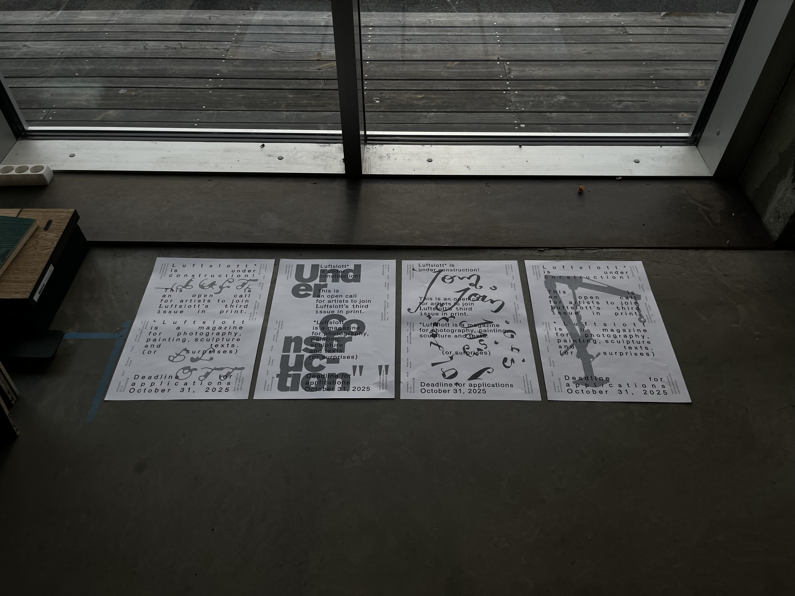
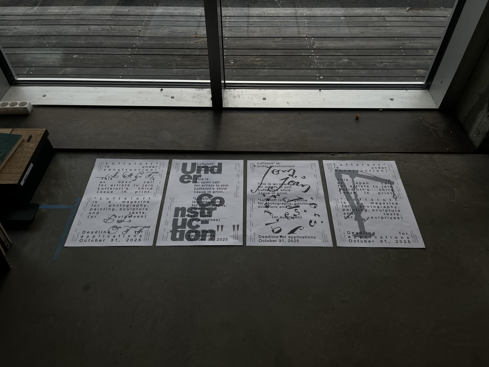
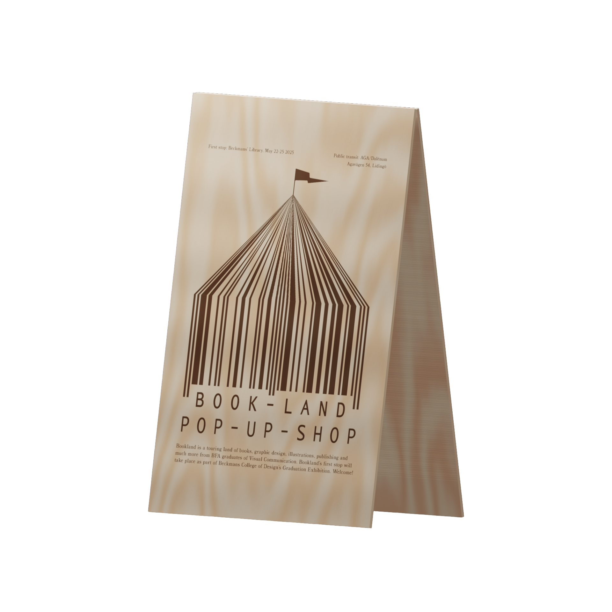
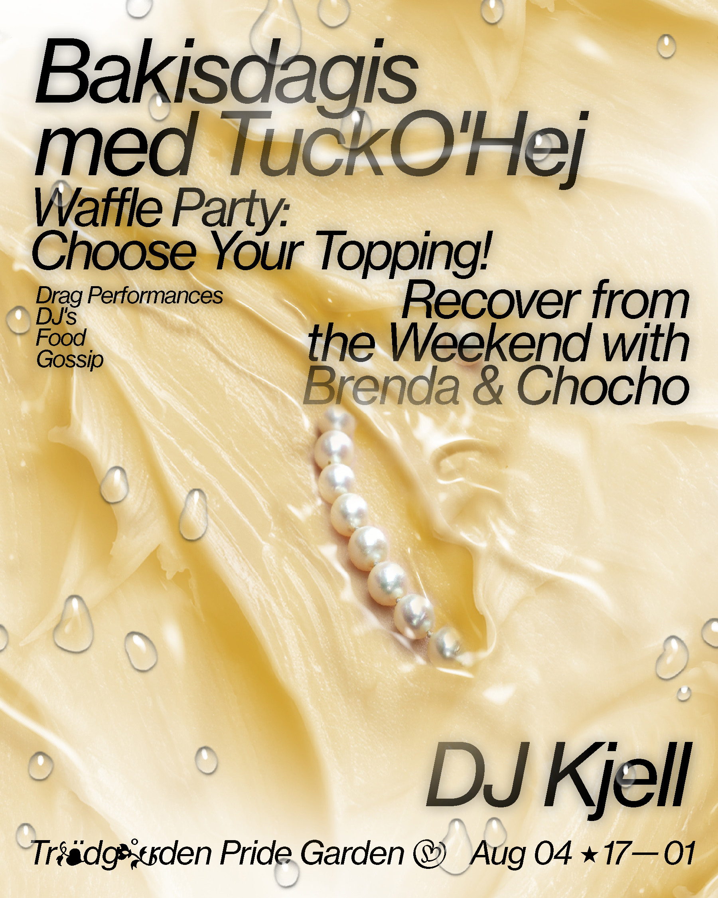
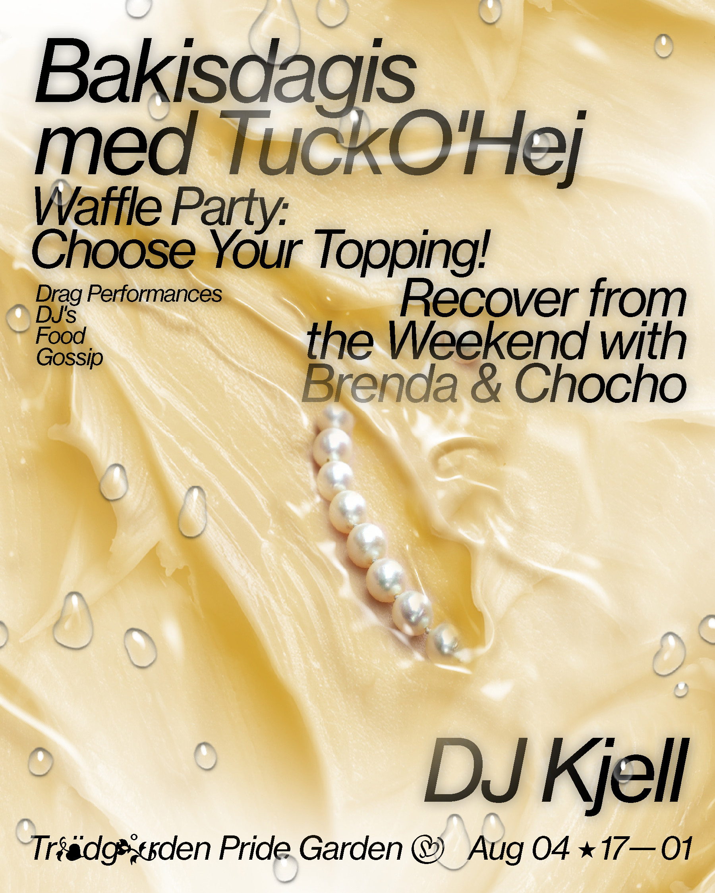

Adam Arinbjarnarson
I (Adam Arinbjarnarson) design graphic identity through print, websites (like this one) and animation. I also experiment with programming, 3d-animation and video editing. Tools I use include:
InDesign, Photoshop, Illustrator
After Effects, Premiere Pro
Figma (design and prototyping)
Cavalry, Blender
HTML, CSS, JavaScript, ChatGPT (for programming)
Handlettering, pencil sketching and illustration
Currently, I am working at an international architecture and design studio based in Oslo. Here, I design visual identities as well as digital or spatial implementations of graphic design, collaborating across diciplines.
Snøhetta Oslo, NO
2025-
I recently graduated from a small scale (sometimes experimental) design school in Stockholm:
Visual Communication, BFA
Beckmans College of Design
2022-2025
During my bachelor studies, I did an internship at a Stockholm based design studio. My contributions were in web design, 2d+3d animation and graphic design, collaborating with UX designers, front and back-end developers or printers to realise design projects:
Research and Development Stockholm, SE
2024
Fellow designer Peter Ström has intitiated an award(!) as part of a resarch project on preservation and archival of digital design. In this project I contributed with research on swedish web design projects and was part of the jury selecting nominees and recipients:
Svensk Webbkonst 2021-2024
w3.svenskwebbkonst.se
Occasionally, I do freelance work at a smaller scale, designing posters and simple printed matter. Don't hesitate to contact:
adaari@icloud.com
@adamglupsk
Luftslott is Under Construction
 


Exhibition poster design for Valand photography.
 Poster for student union breakfast club.
Poster for student union breakfast club.Tyda
Graphic identity, hand assembled poster and cell animation. The project and its process was created through research on the concept of 'Folkhemmet'. On the subject of Swedish identity, there are countless parallell interpretations and connotations. Tyda aims to visualise what it is like to understand Swedish identity when it is being redefined, again and again. The project was exhibited at the show Ett hem in Vandalorum art museum. The poster was assembled with laserjet print on post-it notes.
Designed in collaboration with Maja Ringsäter and Måns Horning

 70x100 cm poster.
70x100 cm poster.
There is no such thing as magic
Visual identity + animation, 2023
There is no such thing as magic is a collaborative project about AI and its societal and environmental impact. The visual identity was designed to reflect the work of scientific researchers at the Beijer Institute and encourage reflection on the realities of generative AI, for example its environmental and social impact. The project was exhibited at Svenskt Tenn in Stockholm, 2024. Designed in collaboration with Maja Ringsäter and Solvej Jansson
Learning software and sampling screen recordings
Bookland
Mini identity, illustration, web page and concept development of a pop-up book shop, taking place at Beckmans' yearly graduation exhibition.
Produced and realised in collaboration with Maja Ringsäter, Tiffany Louise Hoff and Visual communication class of 2025 at Beckmans.
Cell animation and logo design.

Sketch of laser cut street sign
Trädgården Pride Garden
Art direction and concept development for Trädgården's 2024 iteration of its annual Pride clubs. Image treatment/collage, and graphic design. Production in collaboration with Mathieu Nilsson.

 

 Type treatment and event flyer design.
Type treatment and event flyer design. Photography by Agnes Nebrelius.
Collecting